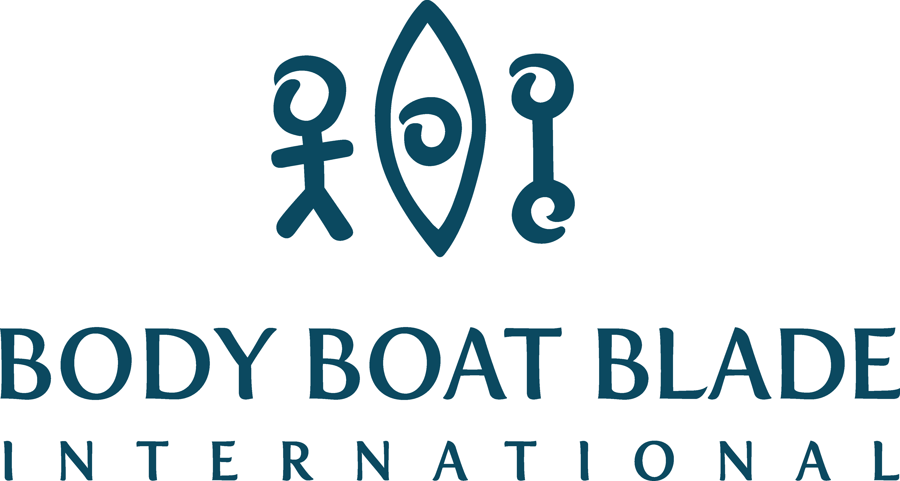
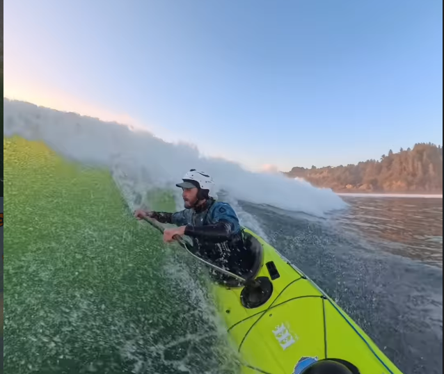

Building the trip-planning tools that we've always wished for 😊


Graton is an ACA Level 3 Coastal Kayaking Instructor and Body Boat Blade coach whose happy place is tide races, surf zones, and rock gardens along Washington's coast and Vancouver Island. He holds a Ph.D. in Economics from UC San Diego and has worked as an Economist and Applied Scientist at the U.S. Census Bureau, Amazon, and Haus Analytics.

Erika is an ACA Level 3 Coastal Kayaking Instructor and Body Boat Blade coach who has explored much of Puget Sound and the Strait of Juan de Fuca, and leads the weekly Tuesday Skills Practice series in Kitsap. At 3 Raccoons, she guides business strategy and shapes the user experience. She is also a practicing chiropractor in Bremerton, Washington.

Asger is a Paddle Canada Level 2 Instructor and lifelong paddler from Denmark. He leads product design and frontend engineering for 3 Raccoons. He holds a BA in Philosophy from Aarhus University, is completing an MS in Software Design at ITU Copenhagen, and previously managed BestCoast Outfitters, a kayak shop in Victoria, BC.

Nick is an ACA Level 4 Open Water Kayaking Instructor, a Sea Kayak Team Paddler for Werner Paddles, and an ambassador for Level Six. He previously served as Lead Instructor at Whidbey Island Kayaking and as a guide at Kayak Trinidad. At 3 Raccoons, he supports research and development initiatives with instrumentation, analytics implementation, and statistical modeling. He holds a BS in Physics from the University of Puget Sound and is a published co-author in the Journal of Geophysical Research.

Audrey is a sea kayaker and SUP enthusiast who loves to paddle so she can connect with all the coastal flora and fauna. She lends GIS support to both our product and research initiatives. She is a student in Environmental Science at Western Washington University.